← 返回阅读库 · 原论文目录
论文讲解阅读文档 · 内容生成 · v003
MaskGIT Masked Generative Image Transformer[2202.04200]
视频时长 00:08:58；讲解文字 3,864 字符；提取讲解画面 33 张。按视频原顺序阅读，每段文字保留时间戳。
文字来自整段视频的自动语音转写，按自然停顿分段，并与 PPT / 论文页面 / 演示画面对齐。未将讲解压缩为摘要；术语、数字和口述公式请结合画面及原论文核对。 阅读稿已校正规范部分明确术语误识别；原始逐字稿和每处修改记录另行保留。
讲解画面为源视频截图（640×360），不是可编辑 PPT 文件。全片按每秒 2 帧扫描内容变化，逐步展开页保留；连续动画保留代表画面。清晰度受源视频限制。
下载完整资料包 · 含离线 HTML、PDF、Word、全部 PPT 画面和字幕。
原论文与材料
MaskGIT: Masked Generative Image Transformer · 下载完整 PDF（23 页）
按时间阅读
00:00:00–00:00:06 · 画面 001
 00:00:00–00:00:06 · 画面 001
00:00:00–00:00:06 · 画面 001大家好,今天我们来快速数一篇论文 MaskGIT Masked Generative Image Transformer。那这篇文章呢主要就是解决了像我们几个小时之前介绍的这个 VQGAN 这个 Auto Regression 这些 model 它们的主要的一个痛点呢就是我在生成这样的模型的时候呢
00:00:06–00:00:23 · 画面 002
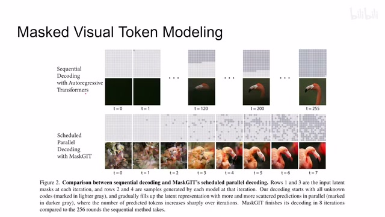
00:00:06–00:00:23 · 画面 002需要一遍一遍的去运行这个模型，每次只能得到一个 token 这样子，我们运行的时间就变得非常长。比如说这里是一个 16x16 的这么一个 latent code，它需要跑这个 transformer 跑 255 次，实在是太耗费时间了。
00:00:23–00:00:25 · 画面 003
00:00:23–00:00:25 · 画面 00300:00:25–00:00:54 · 画面 004
00:00:25–00:00:54 · 画面 004你就想这个孩子要上学，老婆要买包，家门口 36 匹马力的甲壳虫想换保时捷 911，这 auto-regressive model 实在是等不及。那怎么办呢？作者就提出，说我能不能一次生成很多个这个 mask 这样子呢，来减少我们这个运行模型的这个次数，达到我们提高运行速度的这样一个目的。那继续来看作者的实践吧，首先呢是一个经验这个两步的这么一个流程。
00:00:54–00:01:00 · 画面 005
00:00:54–00:01:00 · 画面 005先是还是 VQ-VAE，用 VQGAN 这些东西把我们的 Encoder Decoder 都学出来，把我们的 Codebook 学出来。然后本文的贡献就在这个地方，不是用我们 NLP 里面常用的那种带这种持续关系的带因果的这种 Transformer，而是用一个 Bidirectional Transformer，通过它把所有的 Token 一起做 Attention 这样子，来同时预测很多个 Token。这个就是本文的贡献。
00:01:00–00:01:01 · 画面 006
00:01:00–00:01:01 · 画面 00600:01:01–00:01:30 · 画面 007
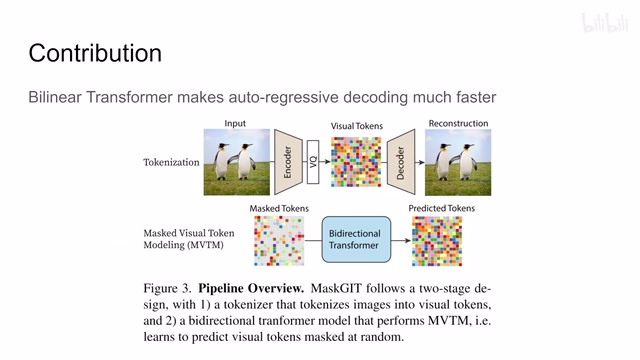
00:01:01–00:01:30 · 画面 007那下面我们继续来看这个 mask visual token 这个 modeling。那首先是一些标题啊，假如说我们这个 latent code 啊是这个 y，那我们现在呢有这个 mask 被 mask 到这个 token 呢，我们用一个这个 mask token 来替代啊。这个时候这个 mask 等于 1 等于 0 的时候呢，这个 token 呢就不要动了。那这个 ym 呢就是我们把这个 mask 应用到这个 y 上面之后得到这么一个结果。
00:01:30–00:01:45 · 画面 008
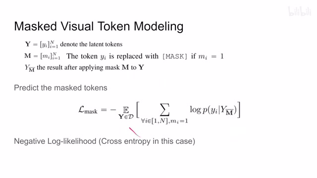
00:01:30–00:01:45 · 画面 00800:01:45–00:01:46 · 画面 009
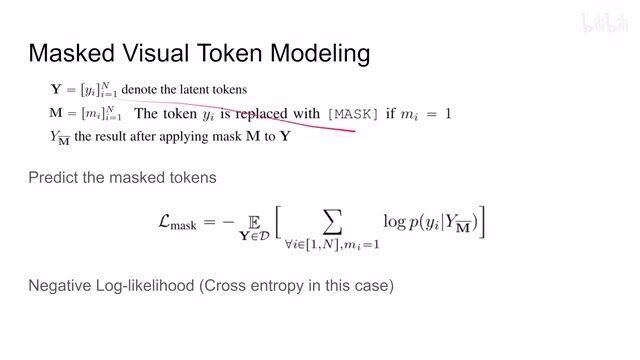
00:01:45–00:01:46 · 画面 00900:01:46–00:02:40 · 画面 010
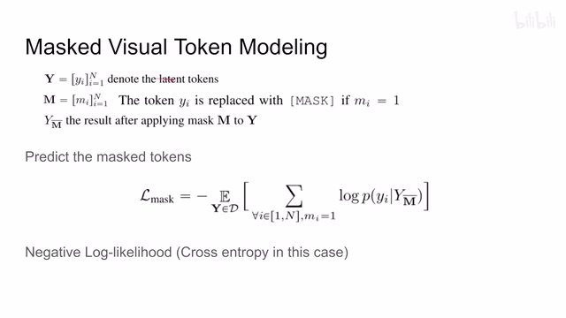
00:01:46–00:02:40 · 画面 010那么因为我们就是要对这个 mask 的这个 token 它里面的这个内容做出预测嘛，所以呢我们这个 loss 的设计呢跟之前这个 vqgan 一样，也是这个 negative log likelihood。那本质上就是一个 cross entropy 加上这个 one-hot encoding 的 label 嘛，依然是一个多分类的问题，预测我们这个 token 在 codebooks 中的这个 index。那与之区别的是因为我们现在这个模型是同时输出很多个 token 嘛，其实是对所有的 token 都有一个预测嘛。
这里的这个 loss 呢只加在这个被 mask 掉的这个 token 上面。你看到就是当只有当 m 等于 1 的时候我们才去记这个 token，所以我们需要模型呢去预测被 mask 掉的这个 token 它的实际的这个 codebook 中的 index。这个呢是本文的这个 loss 的设计，相对之前的改动呢并不是很大。那么本文最关键的其实就是这个 schedule 的这个 parallel decoding。
00:02:40–00:02:41 · 画面 011
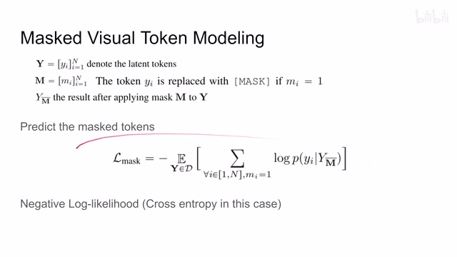
00:02:40–00:02:41 · 画面 01100:02:41–00:02:44 · 画面 012
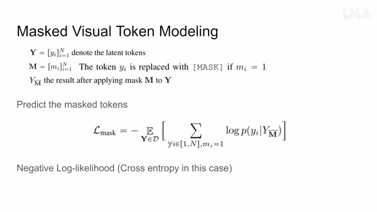
00:02:41–00:02:44 · 画面 01200:02:44–00:02:53 · 画面 013
00:02:44–00:02:53 · 画面 013我怎么样去安排让他每次保留一些 token，每次保留一些 token 怎么样达到这种设计的效果呢？那我们继续来看这个迭代的过程。那么在一开始来到我们这个 embedding space 里面，我们的这个所有的 token 呢我们都标记成这个 mask，因为我们在训练这个模型的时候呢是要求这个模型去预测 mask 的 token，而一开始每个 token 都需要被预测嘛，所以所有的 token 都被 mask 掉。那么有了 mask 之后就开始预测吧对吧，送到我们的模型里面。
00:02:53–00:02:54 · 画面 014
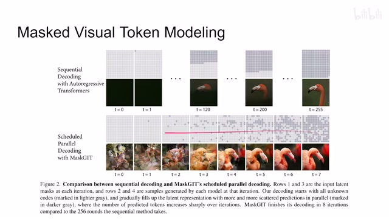
00:02:53–00:02:54 · 画面 01400:02:54–00:02:56 · 画面 015
00:02:54–00:02:56 · 画面 01500:02:56–00:03:38 · 画面 016
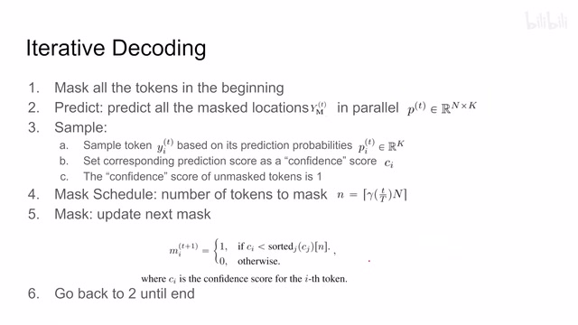
00:02:56–00:03:38 · 画面 016开始预测所有的这个 mask 的这个 token 啊。那假设我们有 n 个 token 吗，然后呢我们的 codebook 有 k 个这样的一个 embedding。这个预测的结果呢就是这个 n 乘 k 的，你就把它理解成这个 n 个样本每一个做这个 k 分类啊就可以了。然后呢就是本文设计中最巧妙的一个地方这个 sampling。那么 sample 的意思呢是说我首先根据我这个预测出来的这个概率哎我来进行一个采样。
00:03:38–00:03:39 · 画面 017
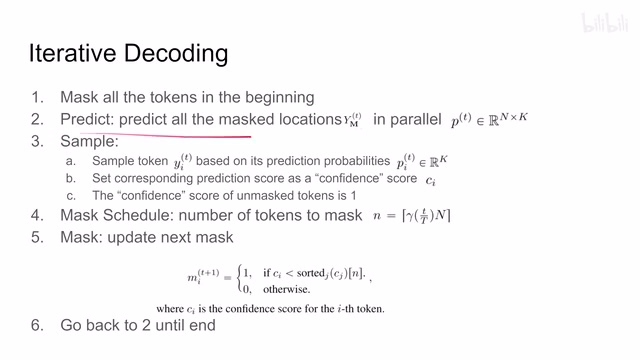
00:03:38–00:03:39 · 画面 01700:03:39–00:03:44 · 画面 018
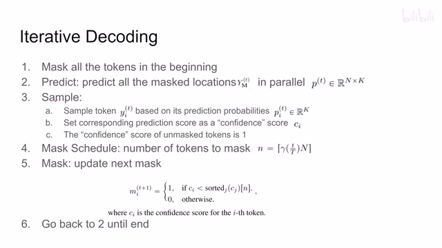
00:03:39–00:03:44 · 画面 01800:03:44–00:03:45 · 画面 019
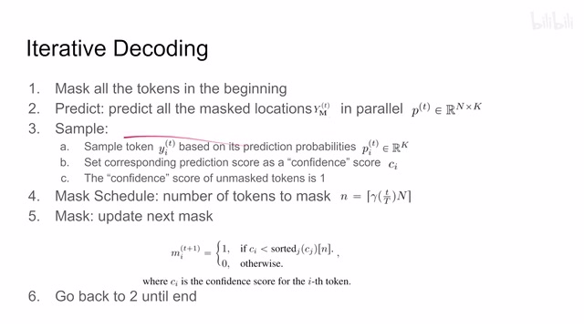
00:03:44–00:03:45 · 画面 01900:03:45–00:04:06 · 画面 020
00:03:45–00:04:06 · 画面 020它就很像这个 variational inference 里面的就是这个这个过程就是在这个过程中呢我们最后产生的这个图像呢就会产生一定的变数那么我们假如说采样到这个东西呢叫做这个 Yi 然后呢我们记录下这个 Yi 它对应的这个预测出来的这个概率我们叫它这个 Ci 也就是这个 P 里面查到
00:04:06–00:04:07 · 画面 021
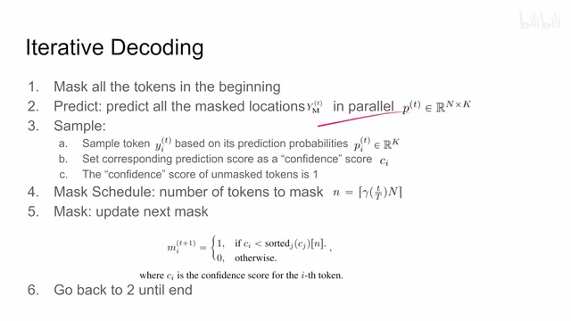
00:04:06–00:04:07 · 画面 02100:04:07–00:04:23 · 画面 022
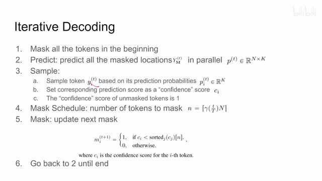
00:04:07–00:04:23 · 画面 022Yi 的它的这个概率这个值是多少我们叫它这个 Ci 叫它这个 confidence score 就是说我们的这个分类器我们这个 transformer 有多确定啊这个位置上这个 token 就该是我们采样出来的这个 token 那当然了还有一个 dode 就是说我们没有 mask 的这个 token 我们不参与预测的这个 token 呢这个 confidence 呢就是 1 那这里呢我们为什么需要保留这么一个 confidence score 呢下面我们马上就看到
00:04:23–00:04:24 · 画面 023
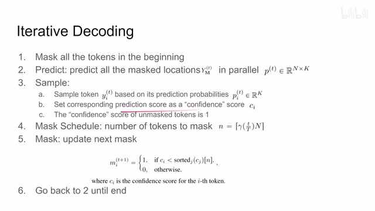
00:04:23–00:04:24 · 画面 02300:04:24–00:05:38 · 画面 024
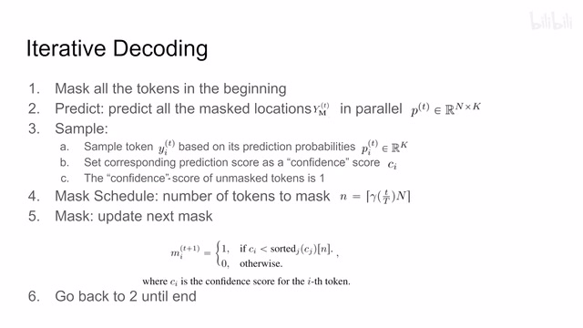
00:04:24–00:05:38 · 画面 024那进行完这个 sample 之后呢再做这个 mask scheduling 就是算一下我们下一步应该 mask 多少 token 或者换句话来说呢我们这一步应该保留多少 token 就是作为我们最终的结果怎么样保留呢你看到我们如何更新这个 mask 我首先根据这个 confidence score 来给它排序这里排序呢是一个升序那么这个 confidence score 最小的先 n 个这个 n 就是下一次我们要 mask 的这个 token 的数量这 n 个这个 token 我们给它标成 1 大于这个 confidence score 的我们就给它标成 0 就是我们很确定这个地方就是我们想要的 index 了在下一轮的循环中呢我们就不再对它进行预测或者换句话来说呢经过这一轮的预测我们保留了这个 capital n 大 n 减去小 n 个这样数量的 token 作为我们最终的结果
最后呢我们更新完了 mask 会回到第二步重新对 mask 的 token 进行这个预测到结果呢再采样再这样循环不断的循环下去就可以了那么这个呢就是本文最核心的如何让我们的这个生成的过程能变得能够并行能够变得高效是最核心的一个技术
00:05:38–00:05:39 · 画面 025
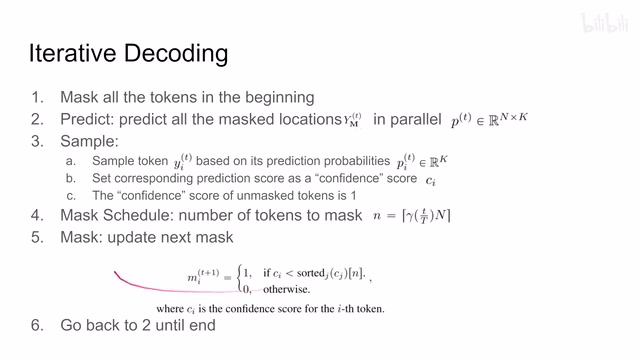
00:05:38–00:05:39 · 画面 02500:05:39–00:06:53 · 画面 026
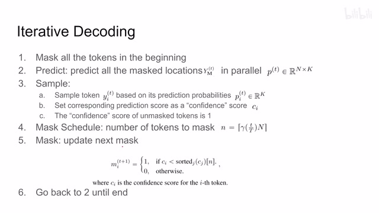
00:05:39–00:06:53 · 画面 026那这时候有朋友就会说了你这个模型这么能一下能并发做实际上你每次都在对所有的 token 做预测那你为啥不一开始直接一步把所有的 token 都预测出来呢这样不是更快吗对吧但如果这样操作的话呢我们的这个模型呢没法很好地捕捉到相邻两个 token 之间它们的这个关系它就失去了这个 auto regressive 这种有上下文之间相互关联的这样一个好的特性相比之下呢现在这个方案呢每次只预测一部分但是预测好的部分呢依然会作为我们的输入送到我的模型里面跟其他的这些 token 产生这个 attention 那么当然你在训练的时候呢就可以随机的与这个 n 啊让我们的模型去适应预测不同的 n 个这个 token 这样不同的这种配置那既然说到这个 n 呢有的朋友已经注意到我们这个 n 的这个函数中呢有一个 gamma
这个 T 相当于这个 capital T 这个大 T 好理解的就是我们这个循环的次数这一个进度条嘛大 N 是我们的这个所有的 token 的数量这个 gamma 是什么呢对吧它呢就是我们的这个 scheduler 这个 scheduler 呢就帮我们控制在这个生成这个模型的过程中每一次我要保留多少个 token 那么当然它的选择呢其实是非常自由的
00:06:53–00:07:00 · 画面 027
00:06:53–00:07:00 · 画面 02700:07:00–00:07:55 · 画面 028
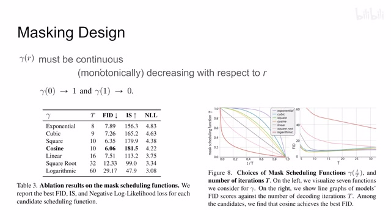
00:07:00–00:07:55 · 画面 028只要它是一个连续的单调递减的这么一个函数同时保证它输入是 0 的时候值是 1输入是 1 的时候值是 0你就可以大胆去尝试你喜欢的各种方式这里作者试了不同的方式同时循环多少次也有不同的实验最后作者发现 cos 的时候它给我们产生的图像质量是最好的虽然它负的 log likelihood 不一定是最低的但是图像质量是最好的这边你可以看到它很明显的告诉你几种不同的 scheduler它的曲线的区别还有针对每一种曲线不同的 t就是循环不同的次数对图像生成质量的这样一个影响那么以上就是本文主要的技术细节了
下面我们来看作者汇报的一些结果
00:07:55–00:08:18 · 画面 029
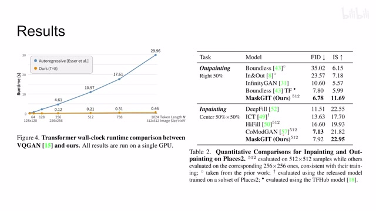
00:07:55–00:08:18 · 画面 029先从速度来看本文的方法比 VQGAN 快多了跑得比谁都快而且生成的 token 的数量越多效果越明显然后是一些 outpainting 和 inpainting 的实验inpainting 就是图像中抠住一块让你补全它outpainting 是给你一半图像让你去看图像外面是什么东西去生成一下
00:08:18–00:08:35 · 画面 030
00:08:18–00:08:35 · 画面 030此外，还有一般意义上的图像的生成。这边参数量运行的模型的次数，你可以看到。本文的方法对这种 VQGAN这种运行的次数节约了很多。这边 CAS 是分类的准确率。就是把我们生成图像再交回。
00:08:35–00:08:37 · 画面 031
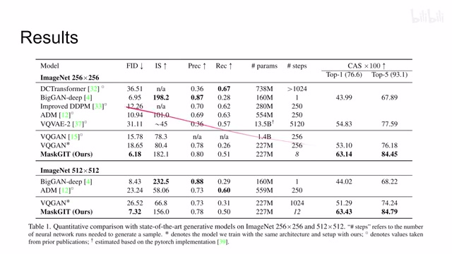
00:08:35–00:08:37 · 画面 031比如说 ImageNet它的 classifier
00:08:37–00:08:58 · 画面 032
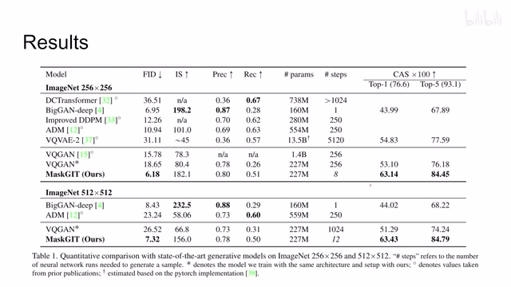
00:08:37–00:08:58 · 画面 032让它去判断生成的是个什么东西。可以看到，本文方法的优势还是很明显的。好的那么以上就是我对这篇文章的一个快速的介绍。那么感兴趣的朋友呢，还是非常推荐你去阅读原文，包括它的这个补充的材料有很多的这个实验，还有一些图像的样例，那么感谢你的收看，再见。
00:08:58–00:08:58 · 画面 033
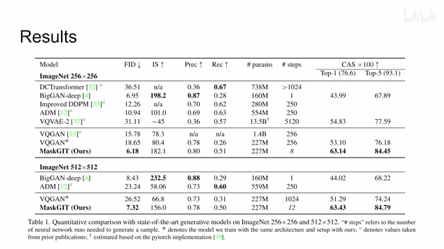
00:08:58–00:08:58 · 画面 033转写与来源说明 · 0 个自动复核提示
保留 62 个原始语音片段，0 个片段触发自动复核提示。提示仅用于定位可能的术语、重复或识别问题，不等于已确认错误。
讲解画面为源视频截图（640×360），不是可编辑 PPT 文件。全片按每秒 2 帧扫描内容变化，逐步展开页保留；连续动画保留代表画面。清晰度受源视频限制。
原视频：paper/合集_2026-10-16_内容生成/[论文简析]MaskGIT Masked Generative Image Transformer[2202.04200].mp4
SHA-256：1a261f30237cdff398a1a3579eebfaaee79f37b05d0a96345591faa9758bac13
全文按视频语音与画面制作。原论文可从上方链接下载；完整资料包保留全文、原始逐字稿、字幕和校对记录。